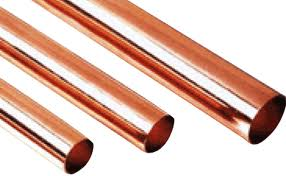
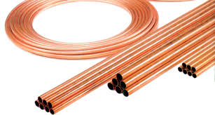

LPP
JACQUES RAYNAUD

| NiveauCAP IFCA 2A |
Thème / DomaineDiagnostiquer, mettre en place, façonner le cuivre |
Module atelier A2 · 4 hFaçonnage cuivre |
SéquenceS10 · sem. 3 · 15/09/2026 (matin) |
| Nom |
Prénom |
Date |
Positionnement (auto)
01234
|
Mise en situation professionnelle
Ordre d'intervention n° OI-2026-S10-03 : le client valide l'implantation. Il commande la
fabrication de la ligne liquide de votre machine. Avant d'autoriser le brasage (qui aura lieu la
semaine prochaine, en S11), le chef d'atelier contrôle individuellement la qualité de votre
façonnage. Aujourd'hui, vous façonnez et vous assemblez à blanc, sans flamme, en 2 jalons.
Ce contrôle qualité n'est pas une note : le positionnement officiel de vos compétences
se fera à l'évaluation sommative de la semaine 7.
Objectifs — je serai capable de…
- tracer une longueur de tube cuivre 3/8" avec sa marge d'emboîture, la couper et
l'ébavurer sans bavure résiduelle ;
- réaliser, sur un tube 3/8", un cintrage à 90° conforme ;
- réaliser un dudgeon conforme ;
- façonner et assembler à blanc la ligne liquide de ma machine.
Prérequis — je sais déjà…
- lire les diamètres de tube cuivre (séance précédente) ;
- citer le seuil de sous-refroidissement autorisé (4 à 8 K) ;
- utiliser un coupe-tube et une cintreuse à main sous surveillance ;
- citer les EPI de l'atelier froid.
Matériel
| N° | Désignation | Quantité |
|---|
| 1 | Machine frigorifique du chantier (ligne liquide type CCF à façonner) | × 1 par binôme |
| 2 | Tube cuivre frigorifique 3/8" (barres écrouies)consommable | selon longueur de ligne |
| 3 | Coupe-tube | × 1 par poste |
| 4 | Alésoir / ébavureur | × 1 par poste |
| 5 | Cintreuse à main | × 1 par poste |
| 6 | Dudgeonnière (jeu de mors incluant le 3/8") | × 1 par poste |
| 7 | Pied à coulisse | × 1 par élève |
| 8 | Mètre ruban ou règle graduée | × 1 par poste |
| 9 | Raccords de la ligne liquide (à préparer, non brasés) | selon plan de la machine |
| 10 | Crayon feutre marqueur pour traçage | × 1 par élève |
| 11 | EPI : gants adaptés, lunettes de protection | × 1 par élève |
| 12 | Carnet de bord | × 1 par élève |
| 13 | Bon de commande hebdomadaire (carnet de chantier) | × 1 par binôme |
| 14 | Fiche de contrôle qualité individuel (ce document) | × 1 par élève |
Consignes de sécurité
| Risque | Parade | Quand |
|---|
| Coupure | Gants adaptés pendant la coupe et l'ébavurage du tube. Ne jamais passer le doigt nu sur une extrémité de tube non ébavurée. | Traçage, coupe, ébavurage |
| Projection de copeaux | Lunettes de protection pendant la coupe, l'ébavurage et le cintrage. Ne jamais souffler les copeaux à l'air comprimé vers une personne. | Pendant tout le façonnage |
| Écrasement des doigts | Mains et doigts toujours à l'écart des mors de la cintreuse et de la dudgeonnière pendant leur fermeture. | Cintrage, dudgeon |
| Brûlure | Jamais de flamme aujourd'hui : aucun brasage n'a lieu dans ce module. Le brasage se fera en séquence S11, avec son propre rituel de sécurité. | Tout le module |
🚨 En cas d'incident : couper l'outil (arrêt d'urgence), alerter le professeur,
ne jamais tenter de retirer soi-même un corps étranger dans l'œil. Trousse de secours et arrêt d'urgence
localisés en salle.
❄ inerWeb Édu — par F. Henninot · LPP Jacques Raynaud — Campus EQUATIO
créé le 05/07/2026 · © F. Henninot 2026 — diffusion pédagogique autorisée, mention de l'origine requise
LPP
JACQUES RAYNAUD
S10 · module atelier A2 · CAP IFCA 2A — document élève
J'observe — les tubes cuivre de l'atelier
Avant de façonner, il faut savoir reconnaître un tube. Observez les deux photos
ci-dessous en silence. Ne notez rien pour l'instant : regardez seulement la forme, la couleur, la
présentation (barre droite ou couronne enroulée).

D'après : Activité n°1 TUBES CUIVRE — tubes cuivre frigorifiques présentés en barres droites.

D'après : Activité n°1 TUBES CUIVRE — tube en couronne (souple, enroulé) et tubes en barres écrouies (rigides, droits).
Qu'avez-vous observé ?
Quelle est la différence entre un tube en barre et un tube en
couronne ? À votre avis, lequel se cintre le plus facilement à la main ?
Rappel — le diamètre en pouces
Les tubes cuivre frigorifiques sont désignés par leur diamètre en pouces
(symbole "). Les diamètres les plus courants sur nos machines sont : 1/4", 3/8",
1/2" et 5/8" (vus et convertis en séance précédente).
Exercice au fil de l'eau — je reconnais un diamètre
Au poste, un tube cuivre vous est présenté. Reconnaissez son diamètre au coup
d'œil, puis vérifiez à la dudgeonnière ou au pied à coulisse.
| Diamètre reconnu au coup d'œil | Diamètre vérifié (pouces) | Méthode de vérification |
|---|
| ______________ | ______________ | |
❄ inerWeb Édu — par F. Henninot · LPP Jacques Raynaud — Campus EQUATIO
créé le 05/07/2026 · © F. Henninot 2026 — diffusion pédagogique autorisée, mention de l'origine requise
LPP
JACQUES RAYNAUD
S10 · module atelier A2 · CAP IFCA 2A — document élève
JALON 1 · traçage, coupe, ébavurage — ≈ 1 h
Étape 1 — je trace et je coupe
- Observer — Repérez sur le plan de votre ligne liquide les longueurs de tube 3/8" nécessaires.
Notez-les ci-dessous.
- Agir — Tracez au feutre marqueur chaque longueur sur le tube, en ajoutant la marge d'emboîture
indiquée par votre professeur.
- Agir — Coupez au coupe-tube, en tournant progressivement sans forcer. Gants adaptés
obligatoires.
- Contrôler — Ébavurez l'intérieur et l'extérieur de chaque extrémité. Passez le doigt
ganté à l'intérieur : aucune bavure ne doit accrocher.
- Réfléchir — Pourquoi une bavure non retirée est-elle un défaut grave sur un circuit
frigorifique ? ___________________________________
Tableau de relevé — tronçons tracés et coupés
| Tronçon | Longueur tracée (mm) | Coupe conforme ? | Ébavurage vérifié ? |
|---|
| Tronçon n° 1 | | ☐ Oui ☐ Non | ☐ Oui ☐ Non |
| Tronçon n° 2 | | ☐ Oui ☐ Non | ☐ Oui ☐ Non |
| Tronçon n° 3 | | ☐ Oui ☐ Non | ☐ Oui ☐ Non |
Jalon 1 franchi
☐ Toutes les longueurs tracées avec marge d'emboîture
☐ Toutes les coupes réalisées gants adaptés portés
☐ Ébavurage vérifié sans bavure résiduelle sur chaque tronçon
Contrôle qualité chef d'atelier : ________________ Heure : ________________
❄ inerWeb Édu — par F. Henninot · LPP Jacques Raynaud — Campus EQUATIO
créé le 05/07/2026 · © F. Henninot 2026 — diffusion pédagogique autorisée, mention de l'origine requise
LPP
JACQUES RAYNAUD
S10 · module atelier A2 · CAP IFCA 2A — document élève
JALON 2 · cintrage, emboîture, dudgeon — ≈ 1 h
Étape 2 — je cintre à 90° à la cintreuse
Calcul métier — longueur développée du cintrage
Avant de cintrer, on calcule la longueur de tube « consommée »
par le coude, pour tracer juste : longueur développée à 90° = 1,57 × Rc (Rc = rayon de cintrage du
gabarit de la cintreuse, selon le diamètre du tube).
| Diamètre du tube | Rc (rayon de cintrage) | Longueur développée (1,57 × Rc) |
|---|
| 3/8" | 28 mm | 1,57 × 28 ≈ 44 mm |
| 1/4" | 14 mm | 1,57 × 14 ≈ 22 mm |
Exemple : pour un tube 3/8", un coude à 90° «
consomme » environ 44 mm de tube — à intégrer au traçage du tronçon (feuille 3, étape 1) avant de couper.
⚠ Avant de cintrer : lunettes de protection portées, mains et doigts à
l'écart des mors de la cintreuse pendant sa fermeture.
- Observer — Repérez sur la cintreuse le gabarit correspondant au diamètre 3/8". Positionnez le
tube au repère de cintrage indiqué par votre professeur.
- Agir — Actionnez la cintreuse progressivement jusqu'à obtenir un angle de 90°.
- Contrôler — Vérifiez l'angle à l'équerre ou au gabarit. Vérifiez que le tube n'est
pas ovalisé (toujours rond, pas aplati) ni plissé à l'intérieur du coude.
- Réfléchir — Que se passe-t-il si le tube est ovalisé au niveau du cintrage ? Quel effet sur le
passage du fluide ? ___________________________________
Étape 3 — je réalise un dudgeon
Le dudgeon (ou évasement) permet d'emboîter deux tubes de même diamètre
sans raccord rapporté, avant brasage.
- Observer — Choisissez le mors 3/8" de la dudgeonnière. Positionnez le tube dans le mors, en
laissant dépasser la longueur indiquée par votre professeur (profondeur de l'emboîture à venir).
- Agir — Serrez le mors, puis actionnez la dudgeonnière progressivement jusqu'à obtenir
l'évasement.
- Contrôler — Vérifiez que la collerette obtenue est régulière sur tout le tour
(pas de fissure, pas de zone plus fine qu'une autre) et que le second tube s'emboîte dedans sans forcer ni
trop de jeu.
- Réfléchir — Pourquoi une collerette fissurée empêcherait-elle un brasage étanche la semaine
prochaine ? ___________________________________
Étape 4 — j'assemble à blanc la ligne liquide
⚠ Rappel : aucune flamme aujourd'hui. On assemble à blanc, sans
braser : le brasage aura lieu en séquence S11.
- Agir — Positionnez tous les tronçons façonnés (cintrages, dudgeons, emboîtures) sur la machine,
selon le plan de la ligne liquide.
- Contrôler — Vérifiez que chaque emboîture s'ajuste sans forcer, que l'alignement
général suit le tracé prévu et qu'aucun tronçon n'est en tension.
- Noter — Consignez au carnet de bord l'état d'avancement de votre ligne liquide (tronçons
façonnés, jalons franchis, points restant à reprendre).
Jalon 2 franchi — contrôle qualité du chef d'atelier
☐ Cintrage à 90° conforme (angle, rondeur, absence de pli)
☐ Dudgeon conforme (collerette régulière, emboîtement correct)
☐ Ligne liquide assemblée à blanc, alignement conforme au plan, aucun tronçon en tension
☐ Autorisation de passage au brasage en S11
Visa chef d'atelier (professeur) : ________________ Heure : ________________
Ce contrôle qualité n'attribue pas de note :
il autorise (ou non) le passage au brasage en S11. Le positionnement officiel de vos compétences (C3.3, C3.4,
C4.5) se fera à l'évaluation sommative conjointe S10-S11, en semaine 7.
❄ inerWeb Édu — par F. Henninot · LPP Jacques Raynaud — Campus EQUATIO
créé le 05/07/2026 · © F. Henninot 2026 — diffusion pédagogique autorisée, mention de l'origine requise
LPP
JACQUES RAYNAUD
S10 · module atelier A2 · CAP IFCA 2A — document élève
Grille formative — auto-positionnement du module
Échelle FrigorX : 0 Non évalué · 1 Non acquis · 2 En cours
d'acquisition · 3 Acquis · 4 Parfaitement maîtrisé. Grille FORMATIVE : elle sert à situer votre
progrès et à préparer la sommative de semaine 7, elle n'est pas remontée comme positionnement
officiel. Cochez d'abord votre propre niveau ressenti (colonne Auto), le professeur valide ensuite
(colonne Prof).
| Compétence / savoir-être | Ancrage | 0 | 1 | 2 | 3 | 4 |
|---|
| C3.4 Façonner, raccorder, assembler, isoler les circuits |
sur T10 · S2.1 |
Compétence non observée ce jour. |
Cintrage ou dudgeon non conformes malgré aide et rappel. |
Cintrage et dudgeon conformes avec aide ou rappel du professeur. |
Cintrage et dudgeon conformes, en autonomie, sans aide. |
Comme « Acquis », geste sûr et rapide, peut expliquer un point de contrôle à un pair. |
| C4.5 Mesurer, comparer des grandeurs |
sur T11 · S2.1 |
Compétence non observée ce jour. |
Traçage imprécis ou contrôle de conformité erroné malgré aide. |
Traçage et contrôle corrects avec aide du professeur. |
Trace, mesure et contrôle la conformité seul, sans erreur. |
Comme « Acquis », et vérifie aussi la conformité du travail d'un pair. |
| C3.3 Implanter, manutentionner, fixer les supportages et équipements (reprise du module A1) |
sur T11 · S6.1 |
Compétence non observée ce jour. |
Assemblage à blanc non conforme (tronçon en tension, alignement non respecté) malgré aide. |
Assemblage à blanc conforme avec aide ou reprise. |
Assemblage à blanc conforme, en autonomie, sans aide. |
Comme « Acquis », et anticipe un point de vigilance pour le brasage à venir en S11. |
| Savoir-être — rigueur, sécurité, entraide, honnêteté de l'auto-positionnement |
observation continue |
Non observé ce jour. |
Sécurité non respectée malgré rappel, ou auto-positionnement non honnête. |
Sécurité respectée avec rappel, entraide occasionnelle. |
Sécurité sans rappel, entraide spontanée envers un pair, auto-positionnement honnête. |
Comme « Acquis », et veille spontanément à la sécurité d'un autre poste. |
Mon auto-positionnement (avant validation professeur) :
C3.4 : 01234
C4.5 : 01234
C3.3 : 01234
À retenir
Le positionnement OFFICIEL de C3.3 · C3.4 · C4.5 se
fait à l'évaluation sommative conjointe S10-S11 (semaine 7), remontée sur École Directe. La grille
de ce jour est un outil formatif : elle vous aide, vous et votre professeur, à savoir ce qui doit être
repris avant l'échéance officielle.
Documents à remettre en fin de module
- Ce document complété (identification, façonnage, jalons 1 et 2, grille formative) ;
- Le carnet de bord à jour ;
- Le bon de commande hebdomadaire (baguettes de brasure, azote… pour S11).
D'après : Activité n°1
TUBES CUIVRE (+ corrigé) ; Activité n°7 CINTRAGES + brasures ; Dossier de présentation pédagogique —
Chantier de remise en état (F. Henninot, 2026).
❄ inerWeb Édu — par F. Henninot · LPP Jacques Raynaud — Campus EQUATIO
créé le 05/07/2026 · © F. Henninot 2026 — diffusion pédagogique autorisée, mention de l'origine requise